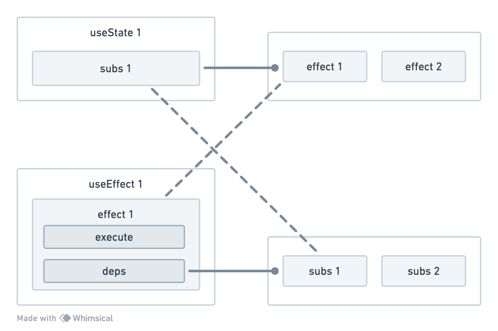

React Hooks 细粒度更新
前言
什么是细粒度更新？简单来说就是只更新需要更新的部分，而不是整个组件都更新。我们熟知的Vue就是细粒度更新，你无需关心你的组件是如何更新的，只需要关心你的数据是如何变化的，Vue会“自动追踪依赖”。
而React则不同，React的更新是粗粒度的，也就是说，当你组件的任何一个props或者state发生变化时，整个组件都会重新渲染，这也是在使用React时令人头疼的地方；接下来我们简单实现一个细粒度更新的 React Hooks；
实现
1. 简单实现useState
function useState(state){
const getter = () => state;
const setter = (newState) => state = newState;
return [getter,setter]
}
useState接收一个value为参数，形成闭包（因为getter和setter都引用了state）；- 用
getter会返回闭包中state的值；setter会修改闭包中state的值；
使用方式如下：
const [count,setCount] = useState(0);
console.log(count()); // 0
setCount(1);
console.log(count()); // 1
2. 简单实现useEffect
我们期望useEffect的行为是：
- 立即执行：当
useEffect执行后，立即执行回调函数；（与React Hooks的useEffect一致）； - 依赖更新时执行：当依赖更新时，执行回调函数；（与
React Hooks的useEffect一致）； - 不需要显示指明依赖：当依赖更新时，自动执行回调函数；（与
React Hooks不一致）；
期望具体行为如下：
const [count,setCount] = useState(0);
//effect 1
useEffect(()=>{
console.log(`count is ${count()}`); //1.打印 count is 0
});
//effect 2
useEffect(()=>{
console.log('nothing'); //2.打印 nothing
});
setCount(1);//3. 执行effect 1，打印 count is 1
要实现如上效果我们要做的核心就是让useEffect和useState建立关系 ，我们可以通过发布订阅来实现：
- 订阅：在
useEffect回调中执行useState的getter时，该effect就订阅了该getter； - 发布：当
useState的setter执行时，就通知所有 订阅了该getter的useEffect回调函数 执行；
而要建立关系，我们需要分别在useState和useEffect 中各自维护一个订阅列表和发布列表：
useState的subs：用来存储订阅该state的effect；useEffect的effect.deps：用来存储effect订阅的state所对应的subs集合；

function useEffect(callback){
//...
const effect = {
//用于执行 useEffect 的回调函数
execute,
//保存该 useEffect 依赖的 state 对应 subs 集合
deps:new Set()
}
//...
}
function useState(value){
// 保存订阅该 state 变化的 effect
const subs = new Set();
//...
}
完整实现useEffect
function useEffect(callback){
const execute = () => {
//重制依赖
cleanup(effect);
//将当前 effect 推入栈顶
effectStack.push(effect);
try{
//执行回调
callback();
} finally{
// effect 出栈
effectStack.pop();
}
}
const effect = {
execute,
deps:new Set()
}
// 立即执行一次，建立发布订阅关系
execute();
}
我们可以先关注三个重要的细节：
- 在
callback执行前调用cleanup清除所有“与该effect相关的订阅发布关系”，在执行时，会重建发布订阅关系；
function cleanup(effect){
//从该effect订阅的所有state对应subs中移除该effect
for(const subs of effect.deps){
subs.delete(effect)
}
// 从该effect依赖的多有 state 对应 subs 移除
effect.deps.clear();
}
- 在调用
state的getter时，需要了解该state当前所处的的是哪个effect上下文（用于建立该state与effect的联系），因此在 callback 执行前将当前effect保存在栈effectStack的顶端，在callback执行后effect出栈。在useState的getter内部获取effectStack的栈顶effect即为“当前所处effect上下文”； - 在
useEffect执行后内部会执行excute，首次建立订阅发布关系。这也是“自动收集依赖”的关键。
完整实现useState
function useState(){
// 保存订阅该 state 变化的 effect
const subs = new Set();
const getter = ()=>{
// 获取当前上下文的effect
const effect = effectStack[effectStack.length - 1];
if(effect){//判断是否处于某个effect的上下文中
// 建立订阅发布关系
subscribe(effect,subs);
}
return value;
}
const setter = (nextValue) =>{
value = nextValue;
// 通知所有订阅该 state 变化的effect执行
for(const effect of [...subs]){
effect.excute();
}
}
return [getter,setter];
}
function subscribe(effect,subs){
//订阅关系建立
subs.add(effect);
//依赖关系建立
effect.deps.add(subs);
}
完整实现useMemo
function useMemo(callback){
const [s,set] = useState();
//首次执行callback，建立回调中 state 的订阅发布关系
useEffect(()=>set(callback()));
return s;
}
最终完整代码
// 保存effect调用栈
const effectStack = [];
function subscribe(effect,subs){
// 订阅关系建立
subs.add(effect);
// 依赖关系建立
effect.deps.add(subs);
}
function cleanup(effect){
// 从 effect 订阅的所有 state 对应的 subs 中移除该effect
for(const subs of effect.deps){
subs.delete(effect);
}
//将该 effect 依赖的所有 state 对应的 subs 移除
effect.deps.clear();
}
function useState(value){
// 保存订阅该 state 变化的 effect
const subs = new Set();
const getter = () => {
// 获取当前上下文的effect
const effect = effectStack.at(-1);
if(effect){
// 建立订阅发布关系
subscribe(effect,subs);
}
return value;
};
const setter = (nextValue) => {
value = nextValue;
// 通知所有订阅该 state 变化的 effect 执行
for(const effect of [...subs]){
effect.excute();
}
};
return [getter,setter];
}
function useEffect(callback){
const excute = ()=>{
// 重置依赖
cleanup(effect);
// 将当前 effect 推入栈顶
effectStack.push(effect);
}
try{
excute()
}finally{
//effect 出栈
effectState.pop();
}
const effect = {
excute,
deps:new Set()
}
// 立即执行一次，建立订阅发布关系
excute();
}
function useMemo(callback){
const [s,set] = useState();
//首次执行callback, 初始化value
useEffect(()=>set(callback()));
return s;
}
结论
通过上面的代码我们可以很容易的实现一个细粒度更新的React Hooks，或许你会疑问为什么React自己不实现一个细粒度更新的Hooks呢？因为React是一个“应用级的框架” ，选择使用 Hooks 的设计方式是为了提供一种更简洁、可组合和易于理解的方式来处理组件的状态和副作用，而不是过于关注细粒度的更新；同时它具有很强的灵活性，你可以根据你的项目需求来选择是否实现细粒度更新，而不是强制性的实现细粒度更新，这也是React的灵活性所在。